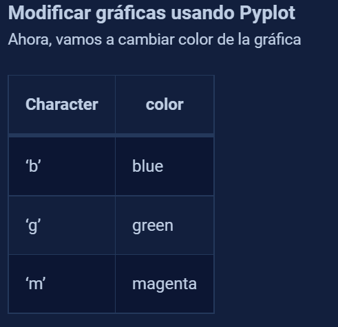
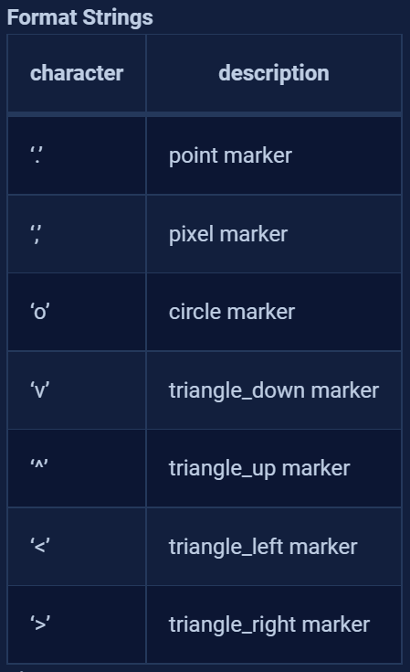
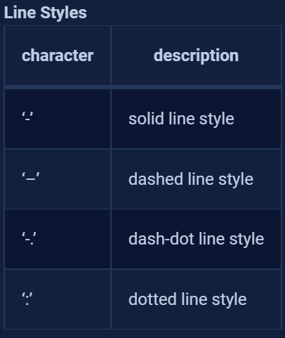
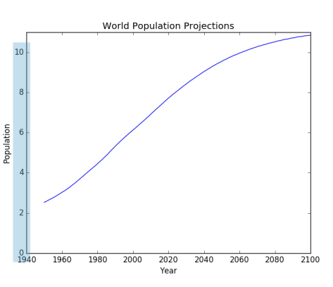
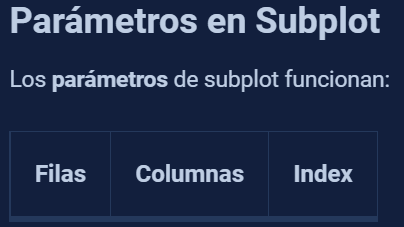
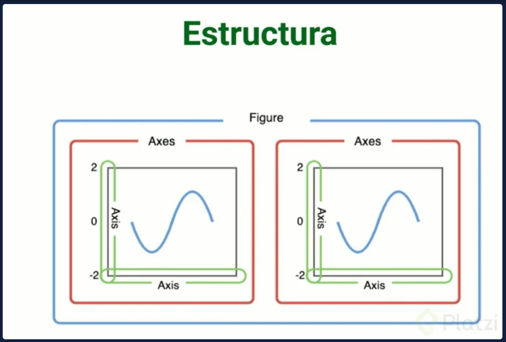
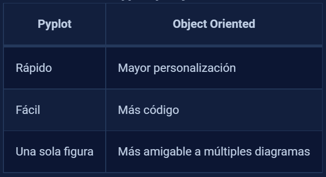
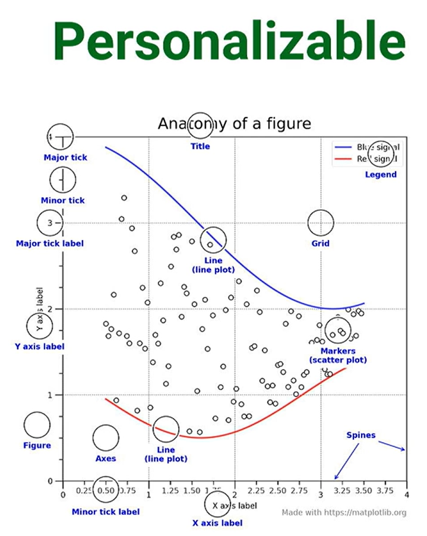

Matplotlib#
What charts should I use?#

Pyplot#
pyplot is the tool from matplotlib that will allow you run charts in a simple way.
(this tool allows you to see one chart at a time)
For multiple charts, refer to subplot
#import import matplotlib.pyplot as plt
import matplotlib.pyplot as plt
import numpy as np
#create a cuadratic function
#set the domain of the function
x = np.linspace(0, 5, 11)
y = x**2
#creating the chart
plt.plot(x, y)
plt.show
---------------------------------------------------------------------------
ModuleNotFoundError Traceback (most recent call last)
Cell In[1], line 3
1 #import import matplotlib.pyplot as plt
----> 3 import matplotlib.pyplot as plt
4 import numpy as np
6 #create a cuadratic function
7
8 #set the domain of the function
ModuleNotFoundError: No module named 'matplotlib'
modify charts using pyplot#
chart color#

#do it with magenta color
plt.plot(x, y, "m")
plt.show()
Format strings#

#do it with circles instead of dots
plt.plot(x, y, "o")
plt.show()
Line Style#

#do it with dash-dot line style
plt.plot(x, y, "-.")
plt.show()
Green colored chart, with triangle_down marker & dotted line style
plt.plot(x, y, "gv:")
plt.show()
Labels, legends, title & size#
axis labels & title#
use
plt.xlabel(” name_of_the_x_axis “) for the xlabel
plt.ylabel(” name_of_the_y_axis “) for the ylabel
plt.title(” title “) for the title
#name the x axis as "Domain" & the y axis as "Range"
#put a title "Cuadratic function"
plt.plot(x, y)
plt.xlabel("Domain")
plt.ylabel("Range")
plt.title("Cuadratic function")
plt.show()
yticks#
You can modify the ticks (blue marked y axis numbers in the picture below:)

example:
note this chart from the previous leeson
plt.plot(x, y)
plt.show()
for some reason, i want the negative y axis to show
plt.plot(x, y)
#create a list with the yticks that you want to show
plt.yticks(np.linspace(-25, 25, 11))
print("The list of y ticks created with linspace is", np.linspace(-25, 25, 11))
#show the chart
plt.show()
The list of y ticks created with linspace is [-25. -20. -15. -10. -5. 0. 5. 10. 15. 20. 25.]
you can even put a name to each tick
plt.plot(x, y)
#create a list with the yticks that you want to show
list_yticks = [-25, -15, -5, 0, 5, 15, 25]
#now create a list with the names for each ytick
namesfor_yticks = ["-25B","-15B","-5B","0","5B","15B","25B"]
###this is supossing you want to show the numbers in billions
#add the yticks
plt.yticks(list_yticks, namesfor_yticks)
#show the chart
plt.show()
Different chart types#
#The charts will have the following data
x = np.linspace(0, 5, 11)
y = x**2
y_2 = x**3
Line chart#
plt.plot(x,y)
plt.show
<function matplotlib.pyplot.show(close=None, block=None)>
Multiple line chart#
#to do a multiple line chart just put the plots one after the otherabs
#cuadratic function
plt.plot(x,y)
#cubic function
plt.plot(x,y_2)
#show the plot
plt.show()
Bar plot#
import matplotlib.pyplot as plt
import numpy as np
#categorical variables
countrys = ["INDIA", "JAPAN", "MEXICO", "COLOMBIA", 'GERMANY']
population = [5000, 800, 900, 1000, 300]
#bar plot
plt.bar(countrys, population)
<BarContainer object of 5 artists>
Modify bars width & bar colors#
plt.bar(countrys,population, width=0.5, color= ["aqua", "grey", "teal", "crimson", "violet"])
plt.show()
xticks & xlabel rotation#
plt.bar(countrys,population, width=0.5, color= ["aqua", "grey", "teal", "crimson", "violet"])
plt.xticks(np.arange(5), ('India','Japon', 'Mexico', 'Colombia', 'Alemania'), rotation = 45)
plt.show()
Horizontal bar plot#
plt.barh(countrys,population)
plt.show()
Histogram#
#remember our cuadratic function
print(x)
print(y)
[0. 0.5 1. 1.5 2. 2.5 3. 3.5 4. 4.5 5. ]
[ 0. 0.25 1. 2.25 4. 6.25 9. 12.25 16. 20.25 25. ]
let’s create a histogram of the y values
plt.hist(y, bins = 10) #you can specify the number of bins
plt.show()
plt.hist(y, bins = 10, histtype="step") #you can specify the type of histogram
plt.show()
Pie chart#
#remember our cuadratic function
print(x)
print(y)
[0. 0.5 1. 1.5 2. 2.5 3. 3.5 4. 4.5 5. ]
[ 0. 0.25 1. 2.25 4. 6.25 9. 12.25 16. 20.25 25. ]
Let’s print the pie chart
plt.pie(y)
plt.show
<function matplotlib.pyplot.show(close=None, block=None)>
Scatter plot#
This one is used to know correlation between variables
#correlation among x & y
plt.scatter(x,y)
plt.show()
customize scatter plot#
in a scatter plot, you can change:
bubble size —> s
bubble shape(marker)—> marker
bubble color —> c
bubble transparency —> alpha
#let's create the data
xscatter = np.random.rand(50)
yscatter = np.random.rand(50)
#i want the bubble size to be random
area = (30 * np.random.rand(50)) **2
#i also want random colors
colors = np.random.rand(50)
plt.scatter(xscatter,yscatter, s=area, c= colors, marker = 'o', alpha= 0.5)
plt.show()
Boxplot#
#creating random data for boxplot
data = np.random.randint(0, 50, 100)
plt.boxplot(data)
plt.show()
change direction, fill interquartilic range & focus median#
change direction:
vert = False fill interquartilic range:
patch_artist=True Focus median:
notch = True
plt.boxplot(data, vert=False, patch_artist=True, notch=True)
plt.show()
Remove outliers (datos atipicos)#
#remember that data are numbers from 1 to 50. let's append a 200
data = np.append(data, 200)
plt.boxplot(data)
plt.show()
that outlier is a problem, remove it so we can see the chart in a better way
#with the argument showfliers you can decide if keep or remove outliers
plt.boxplot(data, showfliers=False)
plt.show()
Subplot#
Subplot creates a matrix of charts

#Generating the data
import matplotlib.pyplot as plt
import numpy as np
x = np.linspace(0,5,11)
y = x ** 2
Now let’s create the matrix of charts
the matrix will be 1x2
#Chart number 1
plt.subplot(1, 2, 1) #1 row, 2cols, 1st index
plt.plot(x, y, "r--")
#chart number 2
plt.subplot(1, 2, 2) #1 row, 2cols, 2nd index
plt.pie(y)
#show the plot
plt.show()
now let’s create a 2x2 matrix
#let's create another variable
twotimesx = x*2
#Chart number 1
plt.subplot(2, 2, 1) #1 row, 2cols, 1st index
plt.plot(x, y, "r--")
plt.plot(x, twotimesx, "b--")
#chart number 2
plt.subplot(2, 2, 2) #1 row, 2cols, 2nd index
plt.pie(y)
#chart number 3
plt.subplot(2, 2, 3) #1 row, 2cols, 2nd index
plt.hist(y)
#show the plot
plt.show()
Multiple charts with the object-oriented method#
in this method, an object defines a figure, that figure is a canva that contains multiple charts called axes
the figure is a canva
inside of the figure, charts are axes
inside of the axes, each chart has teir own axis

Differences between pyplot & object-oriented#

Creating charts with object-oriented method#
import matplotlib.pyplot as plt
import numpy as np
#creating the data
x = np.linspace(0, 5, 11)
y = x**2 #cuadratic function
y_2 = x*2 #just x two times
#let's create the figure
fig = plt.figure()
#let's add the axes
axes = fig.add_axes([0.1, 0.1, 0.5, 0.9]) #arguments -> (xposition,yposition,width, height)
axes2 = fig.add_axes([0.1, 0.6, 0.4, 0.3]) #arguments -> (xposition,yposition,width, height)
#notice how you can customize the chart with those arguments
axes.plot(x,y, "r")
axes2.pie(y_2)
fig.show()
With this object oriented method, you can personalize

Subplots#
Does the same as subplot, but the difference is that this one gets all the advantages of the object oriented method from matplotlib
import numpy as np
import matplotlib.pyplot as plt
x = np.linspace(0, 5, 11)
y = np.sin(x)
fig, axes = plt.subplots()
axes.plot(x, y)
plt.show()
multiple charts#
#this creates a figure with two charts
fig, axes = plt.subplots(nrows=1, ncols=2)
axes[0].plot(x,y,"b")
axes[1].plot(y,x,"r")
[<matplotlib.lines.Line2D at 0x7f5b9bd17a30>]
Matrix of charts#
You can use the object oriented method or fig type to create a matrix of charts
matrix of charts with fig (call by index)#
fig, axes = plt.subplots(nrows=2,ncols=4)
#we will access the charts through the chart index in the matrix
axes[0,0].plot(x,y)
axes[0,1].plot(y,x, 'r')
axes[0,2].hist(y)
fig.tight_layout() #mejora la visualización de los ejes de cada gráfico
matrix of charts with fig (call by name)#
#same functionality as above but now we won't call by positions but by labels
fig, ((sinx, cosx, tanx, sin2x), (axes5, axes6, axes7, axes8)) = plt.subplots(nrows=2,ncols=4)
#genera un trazo accediendo a las graficas a traves del indice de la matriz
sinx.plot(x, np.sin(x), "b")
cosx.plot(x, np.cos(x), "r")
tanx.plot(x, np.tan(x), "g")
sin2x.plot(x, np.sin(2*x), "b")
fig.tight_layout() #mejora la visualización de los ejes de cada gráfico
Labels, Legends, title & size (for fig objects)#
Titles , Labels & Legends#
fig, (ax1,ax2) = plt.subplots(1,2)
#first plot
ax1.plot(x,y, label="sin(x)") #label for first plot & plot definition
ax1.set_title("X - Y Relation") #title for first plot
ax1.set_xlabel("X") #xlabel for first plot
ax1.set_ylabel("Y") #ylabel for first plot
ax1.legend() #legend for first plot
#second plot
ax2.plot(y,x, label="cos(x)") #label for second plot & plot definition
ax2.set_title("Y - X Relation") #title for second plot
ax2.set_xlabel("Y") #xlabel for second plot
ax2.set_ylabel("X") #ylabel for second plot
ax2.legend() #legend for second plot
<matplotlib.legend.Legend at 0x7f5b9c153af0>
Size#
you can modify the size with the argument figsize, which receives a tuple (width, length)
fig, (ax1,ax2) = plt.subplots(1,2, figsize= (4,6))
ax1.plot(x, y)
ax2.plot(x,y)
fig, (ax1,ax2) = plt.subplots(1,2, figsize= (1,3))
ax1.plot(x, y)
ax2.plot(x,y)
[<matplotlib.lines.Line2D at 0x7f5b9b99cb80>]
Colors & Styles#
import matplotlib.pyplot as plt
print( plt.style.available )
['Solarize_Light2', '_classic_test_patch', '_mpl-gallery', '_mpl-gallery-nogrid', 'bmh', 'classic', 'dark_background', 'fast', 'fivethirtyeight', 'ggplot', 'grayscale', 'seaborn-v0_8', 'seaborn-v0_8-bright', 'seaborn-v0_8-colorblind', 'seaborn-v0_8-dark', 'seaborn-v0_8-dark-palette', 'seaborn-v0_8-darkgrid', 'seaborn-v0_8-deep', 'seaborn-v0_8-muted', 'seaborn-v0_8-notebook', 'seaborn-v0_8-paper', 'seaborn-v0_8-pastel', 'seaborn-v0_8-poster', 'seaborn-v0_8-talk', 'seaborn-v0_8-ticks', 'seaborn-v0_8-white', 'seaborn-v0_8-whitegrid', 'tableau-colorblind10']
the list above is showing all the available styles, let’s select “dark_background” to test
#grid style
plt.style.use('dark_background')
plt.plot(x, y)
plt.show()
plt.style.use("seaborn-whitegrid")
fig, ax = plt.subplots()
ax.plot(x,x+1, 'r--')
ax.plot(x,x+2, 'bo-')
ax.plot(x,x+3, 'g.:')
ax.plot(x,x+4, 'purple')
/tmp/ipykernel_197/1747373470.py:1: MatplotlibDeprecationWarning: The seaborn styles shipped by Matplotlib are deprecated since 3.6, as they no longer correspond to the styles shipped by seaborn. However, they will remain available as 'seaborn-v0_8-<style>'. Alternatively, directly use the seaborn API instead.
plt.style.use("seaborn-whitegrid")
[<matplotlib.lines.Line2D at 0x7f5b9b958af0>]
Personalize colors & styles in pyplot#
color#
fig, ax = plt.subplots(figsize = (6,6))
ax.plot(x,x+1,color = '#D426C8') #---> RGB Color
ax.plot(x,x+2,color = '#66FF89')
ax.plot(x,x+3,color = 'blue') #---> Common Color
ax.plot(x,x+4, color = 'black')
[<matplotlib.lines.Line2D at 0x7f5b9b817dc0>]
transparency & line width#
fig, ax = plt.subplots(figsize=(6,6))
ax.plot(x,x+1, color="#D426C8", alpha=0.5, linewidth=18)
ax.plot(x,x+2,color = '#66FF89', linewidth= 3)
ax.plot(x,x+3,color = 'blue', linewidth= 5)
ax.plot(x,x+4, color = 'black', alpha = 0.3, linewidth= 12)
[<matplotlib.lines.Line2D at 0x7f5b9b63edc0>]
linestyle & markers#
fig, ax = plt.subplots(figsize = (6,6))
ax.plot(x,x+3,color = 'blue', linestyle = 'dashed', marker = 'x')
ax.plot(x,x+4, color = 'black',linestyle = '--', marker = 'P')
[<matplotlib.lines.Line2D at 0x7f5b9b6e57c0>]
marker size & marker face color#
fig, ax = plt.subplots(figsize = (6,6))
ax.plot(x,x+3,color="blue",linestyle="dashed",marker="8",markersize=10,markerfacecolor= "#37D842")
ax.plot(x,x+4, color = 'black',linestyle = '--', marker = 'P', markerfacecolor="#FF0000")
[<matplotlib.lines.Line2D at 0x7f5b9b6646d0>]
![Created in deepnote.com]() Created in Deepnote
Created in Deepnote